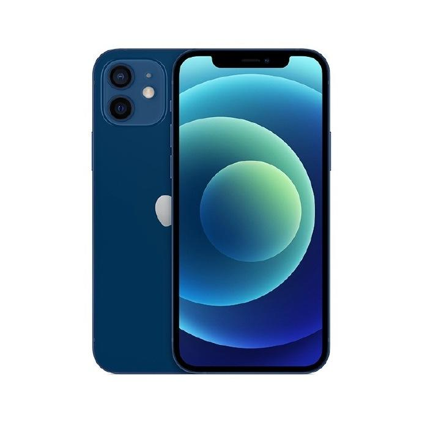
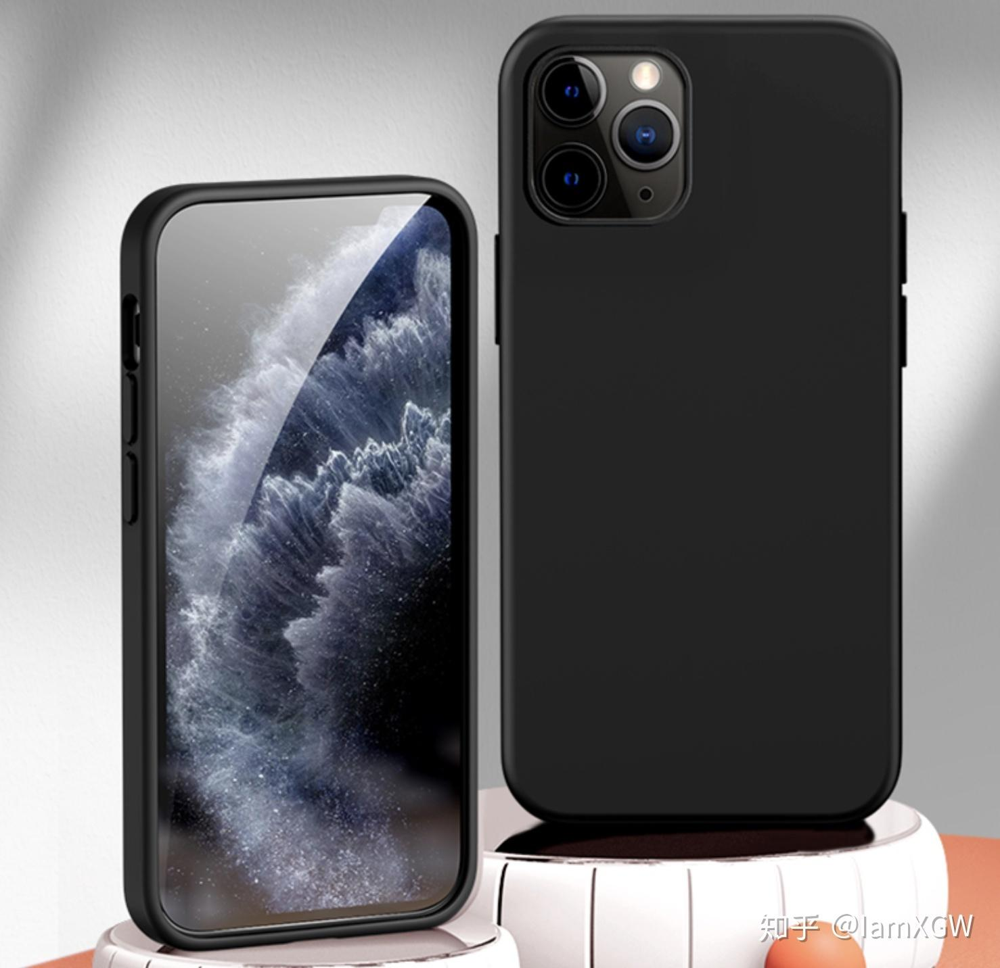

The iPhone 12 is an iPhone developed by Apple Inc. in the United States. It adopts a straight face frame design, supports 5g, is equipped with A14 bionic chip, and has a dual lens rear camera system. Beidou navigation is supported in five colors: black, white, red, green and blue. At 1:00 a.m. Beijing time on October 14, 2020, apple officially released the iPhone 12 in Apple park. On October 16, 2020, Apple's new 5g iPhone 12 / Pro will be pre purchased on October 16. Among them, iPhone 12 and iPhone 12 Pro will be pre purchased at 8:00 p.m. on October 16 and put on sale on October 23. 
The iPhone 12 Pro is Apple's 6.1-inch smartphone with a super retina XDR screen. On October 14, 2020 Beijing time, Apple released the iPhone 12 pro. On October 16, 2020, Apple's new 5g iPhone 12 / Pro will be pre purchased on October 16. Among them, iPhone 12 and iPhone 12 Pro will be pre purchased at 8:00 p.m. on October 16 and put on sale on October 23. 